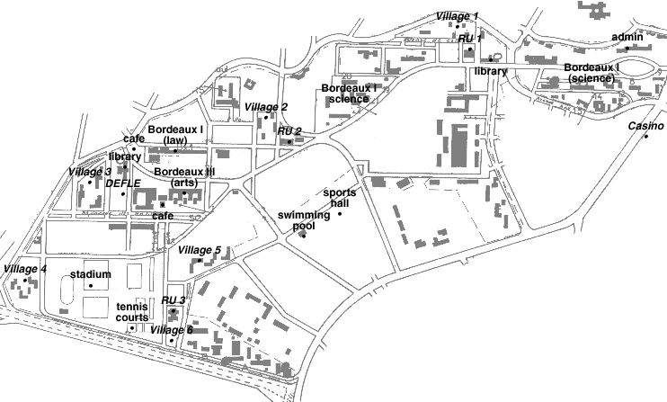

Here is a small copy of the map you will undoubtedly get loads of copies of during your first couple of weeks in Bordeaux. Indicated are some of the more important places on the campus as well as places mentioned in this guide. As well as the stadium at the bottom left of the map, there is the old stadium next to Village 2 which is still used for football. The sports hall also houses the squash courts and the climing wall.
To give you a rough idea of scale, it takes about ten minutes to walk from RU2 to RU1 so Village 6 , for example, really is a bit off the beaten track.
 {% include bordeaux_guide_footer.html %}